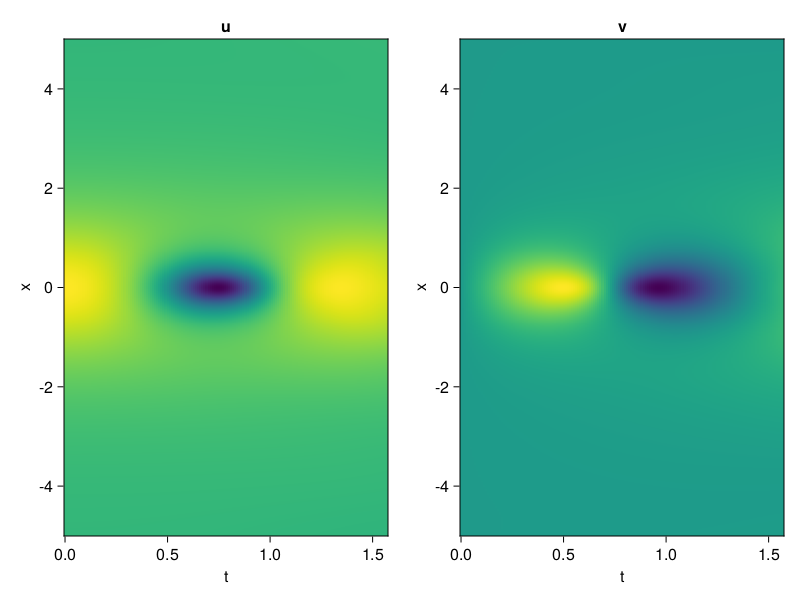
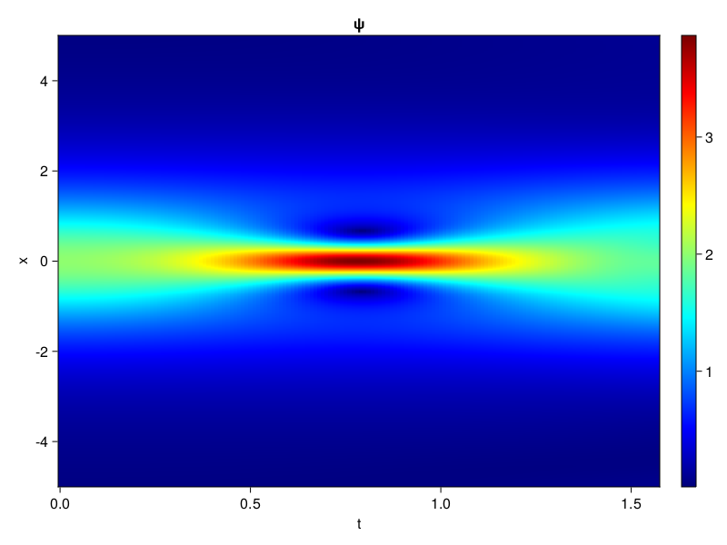
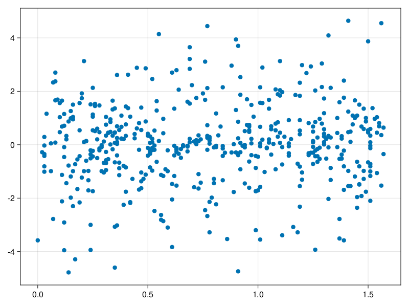

Schrödinger equation
The nonlinear Shrödinger equation is given by
\[\mathrm{i} \partial_t \psi=-\frac{1}{2} \sigma \partial_{x x} \psi-\beta|\psi|^2 \psi\]
Let $\sigma=\beta=1, \psi=u+v i$, the equation can be transformed into a system of partial differential equations
using ModelingToolkit, IntervalSets, Sophon, CairoMakie
using Optimization, OptimizationOptimJL
@parameters x,t
@variables u(..), v(..)
Dₜ = Differential(t)
Dₓ² = Differential(x)^2
eqs=[Dₜ(u(x,t)) ~ -Dₓ²(v(x,t))/2 - (abs2(v(x,t)) + abs2(u(x,t))) * v(x,t),
Dₜ(v(x,t)) ~ Dₓ²(u(x,t))/2 + (abs2(v(x,t)) + abs2(u(x,t))) * u(x,t)]
bcs = [u(x, 0.0) ~ 2sech(x),
v(x, 0.0) ~ 0.0,
u(-5.0, t) ~ u(5.0, t),
v(-5.0, t) ~ v(5.0, t)]
domains = [x ∈ Interval(-5.0, 5.0),
t ∈ Interval(0.0, π/2)]
@named pde_system = PDESystem(eqs, bcs, domains, [x,t], [u(x,t),v(x,t)])\[ \begin{align} \frac{\mathrm{d}}{\mathrm{d}t} u\left( x, t \right) =& - \frac{1}{2} \frac{\mathrm{d}}{\mathrm{d}x} \frac{\mathrm{d}}{\mathrm{d}x} v\left( x, t \right) - \left( \left|u\left( x, t \right)\right|^{2} + \left|v\left( x, t \right)\right|^{2} \right) v\left( x, t \right) \\ \frac{\mathrm{d}}{\mathrm{d}t} v\left( x, t \right) =& \frac{1}{2} \frac{\mathrm{d}}{\mathrm{d}x} \frac{\mathrm{d}}{\mathrm{d}x} u\left( x, t \right) + \left( \left|u\left( x, t \right)\right|^{2} + \left|v\left( x, t \right)\right|^{2} \right) u\left( x, t \right) \end{align} \]
pinn = PINN(u = Siren(2,1; hidden_dims=16,num_layers=4, omega = 1.0),
v = Siren(2,1; hidden_dims=16,num_layers=4, omega = 1.0))
sampler = QuasiRandomSampler(500, (200,200,20,20))
strategy = NonAdaptiveTraining(1,(10,10,1,1))
prob = Sophon.discretize(pde_system, pinn, sampler, strategy)OptimizationProblem. In-place: true
u0: ComponentVector{Float64}(u = (layer_1 = (weight = [-0.014644324779510498 0.10726940631866455; -0.07935863733291626 0.33903712034225464; … ; -0.4170244336128235 0.3163696527481079; -0.27632272243499756 -0.2084072232246399], bias = [0.0; 0.0; … ; 0.0; 0.0;;]), layer_2 = (weight = [0.15399152040481567 0.5750511288642883 … 0.2865270972251892 0.3465035557746887; 0.5990384817123413 -0.21395330131053925 … -0.27459320425987244 0.11806695908308029; … ; -0.32444122433662415 0.2955760955810547 … -0.4322495460510254 0.545407772064209; 0.3635723888874054 0.09505932778120041 … -0.36779049038887024 0.3047323226928711], bias = [0.0; 0.0; … ; 0.0; 0.0;;]), layer_3 = (weight = [0.0956314280629158 0.24474652111530304 … -0.6114361882209778 -0.11288698762655258; -0.027537094429135323 -0.5837752819061279 … 0.06475638598203659 -0.00145979062654078; … ; -0.23423495888710022 0.13991416990756989 … 0.07289265841245651 -0.44932809472084045; -0.1443825364112854 -0.015559394843876362 … 0.48097220063209534 -0.23555049300193787], bias = [0.0; 0.0; … ; 0.0; 0.0;;]), layer_4 = (weight = [-0.04071594402194023 0.4701445400714874 … -0.4914146959781647 0.6094449162483215; 0.11726030707359314 0.06009479612112045 … -0.197677344083786 -0.36887383460998535; … ; -0.5395167469978333 -0.5130890011787415 … -0.022723078727722168 -0.032305192202329636; -0.23171067237854004 -0.4449004530906677 … 0.5356598496437073 0.5686230063438416], bias = [0.0; 0.0; … ; 0.0; 0.0;;]), layer_5 = (weight = [0.4099896550178528 0.5475253462791443 … -0.38530856370925903 0.5718479156494141], bias = [0.0;;])), v = (layer_1 = (weight = [-0.19570136070251465 0.04251676797866821; -0.1967940330505371 -0.1927952766418457; … ; -0.28485774993896484 0.4715452790260315; 0.4608890414237976 0.13363701105117798], bias = [0.0; 0.0; … ; 0.0; 0.0;;]), layer_2 = (weight = [0.5000528693199158 0.008413159288465977 … 0.05593208968639374 -0.2997969090938568; 0.35153475403785706 0.1063351258635521 … 0.5706680417060852 0.2368180751800537; … ; -0.5724760293960571 0.3776243329048157 … 0.5110275149345398 -0.3233078122138977; 0.49300944805145264 0.21404163539409637 … 0.21795322000980377 0.13543304800987244], bias = [0.0; 0.0; … ; 0.0; 0.0;;]), layer_3 = (weight = [-0.014440005645155907 0.4486237168312073 … -0.2314857542514801 -0.451366126537323; 0.2203885167837143 -0.5372703075408936 … -0.412514328956604 0.023490021005272865; … ; 0.5446329116821289 0.2785964608192444 … -0.028253009542822838 -0.0009876234689727426; -0.11048388481140137 0.36087706685066223 … 0.5837213397026062 0.5220639705657959], bias = [0.0; 0.0; … ; 0.0; 0.0;;]), layer_4 = (weight = [0.589366614818573 -0.24251504242420197 … 0.24295121431350708 -0.33576276898384094; -0.047025300562381744 -0.044764842838048935 … 0.3974647521972656 0.15886758267879486; … ; -0.2042119801044464 -0.540955126285553 … 0.2164238691329956 0.15225884318351746; 0.3310532867908478 -0.5114256143569946 … -0.5458362102508545 -0.5279346704483032], bias = [0.0; 0.0; … ; 0.0; 0.0;;]), layer_5 = (weight = [0.116745725274086 0.18085803091526031 … -0.6011854410171509 -0.1215270385146141], bias = [0.0;;])))Now we train the neural nets and resample data while training.
function train(pde_system, prob, sampler, strategy, resample_period = 500, n=10)
bfgs = BFGS()
res = Optimization.solve(prob, bfgs; maxiters=2000)
for i in 1:n
data = Sophon.sample(pde_system, sampler)
prob = remake(prob; u0=res.u, p=data)
res = Optimization.solve(prob, bfgs; maxiters=resample_period)
end
return res
end
res = train(pde_system, prob, sampler, strategy)u: ComponentVector{Float64}(u = (layer_1 = (weight = [-0.3113236163819071 0.09146341166284241; -0.2658716374800666 0.21259655877135195; … ; -0.23096583623543565 -0.29058253327567063; -0.4529050412780346 0.5377435258730136], bias = [-0.12084993366850919; -0.030912238284611475; … ; 0.22030985736449943; -0.35842995434336994;;]), layer_2 = (weight = [0.35871689303929793 0.8462878426338567 … 0.3364850503792668 0.5252385587513766; 0.5720273125583238 -0.28399377593682323 … -0.15904724494216735 -0.018413855619156504; … ; -0.33346045109496686 0.3761706293179168 … -0.589803400676922 0.6155661122226912; 0.25965557064076966 -0.19901510839327916 … -0.5038989563763322 0.30194313231232517], bias = [-0.22301512527149803; 0.1865984603597474; … ; -0.8367815271137466; 0.1304691413368935;;]), layer_3 = (weight = [-0.08476240633788866 0.3548207204543916 … -0.4566410356152382 -0.1304372331659867; -0.06410091494185739 -0.7098260737883372 … 0.13857713740369887 0.04934908688132086; … ; -0.4670916763853107 -0.2659197985522755 … -0.1278047515927241 -0.5092654247806465; 0.06551877310030713 0.162243135751738 … 0.4977726701100478 -0.027668715207258804], bias = [0.0847081309864843; 0.01801253266903812; … ; 0.28425958144427355; -0.08648912122211234;;]), layer_4 = (weight = [-0.039289680829524234 0.4872411637216547 … -0.4819382468990427 0.6212569670576812; -0.02299812579263824 0.10628552235135848 … 0.36425402891358544 -0.13301093687530907; … ; -0.8744108593831065 -0.45147361096955463 … -0.3557763241125728 -0.1392746818425401; -0.2885932993658272 -0.1658729840803494 … 0.768258631495866 0.461578918531563], bias = [-0.3170833947170689; 0.19952606766165645; … ; -0.08111859449710504; 0.3622789927122441;;]), layer_5 = (weight = [-0.030691564570094167 0.38908224916763384 … -0.5271813533192422 0.8644517609375323], bias = [-0.13721090969087546;;])), v = (layer_1 = (weight = [0.23154319634764933 -0.020357792712636755; -0.4519078284934804 0.24869191427334436; … ; -0.2560597803366484 0.719903668673031; 1.3850754496616196 -0.6428093564911183], bias = [-0.06635724580835003; -0.4964568565813554; … ; -0.3156318178298692; 0.5167632729402661;;]), layer_2 = (weight = [0.5149442774627252 -0.2922849558792717 … 0.3450253187949907 0.12746680734665572; 0.4933401944462196 0.182109370520753 … 0.4668306735044134 0.07219490326941268; … ; -0.3145182532375429 0.2867913548283947 … 0.7140334421996284 -0.16642081610934487; 0.459730587063537 0.2165499630180533 … 0.053558005434457635 0.04587605151668492], bias = [-0.07446814590714547; -0.25164123543702427; … ; 0.17831596422504473; -0.128185333552882;;]), layer_3 = (weight = [-0.2542326148114218 0.3339477092430994 … -0.6014205529860096 -0.2994045370180279; 0.1685647606667095 -0.3749903805881213 … -0.4186817203068056 -0.06851559257822278; … ; 0.6096111858751767 0.4193169436276764 … 0.12113987842222176 -0.1624091508921146; 0.06104981737634111 0.3802557765385202 … 0.6366900969504443 0.41319074159216823], bias = [-0.2777941542316501; 0.15135860937225146; … ; -0.09215696384127345; -0.2545305638391993;;]), layer_4 = (weight = [0.4204976534504187 -0.03533064753543079 … 0.07538034707822289 -0.4712419667520807; -0.07741843165687377 -0.134087718722307 … 0.6182720555317368 0.4813383916021432; … ; -0.5616009794031911 -0.9816490497349709 … -0.4299332340142213 0.2614246118008327; 0.26936908850798463 -0.5886030957473829 … -0.6255845847272904 -0.3863456662548214], bias = [0.07722682978083036; -0.07136093642380839; … ; 0.3699649022735542; 0.43028303319746813;;]), layer_5 = (weight = [0.42853723374314 0.1728430667851447 … -0.8739505985259068 0.8301868484040902], bias = [-0.16531661436859382;;])))phi = pinn.phi
ps = res.u
xs, ts= [infimum(d.domain):0.01:supremum(d.domain) for d in pde_system.domain]
u = [sum(phi.u(([x,t]), ps.u)) for x in xs, t in ts]
v = [sum(phi.v(([x,t]), ps.v)) for x in xs, t in ts]
ψ = @. sqrt(u^2+ v^2)
axis = (xlabel="t", ylabel="x", title="u")
fig, ax1, hm1 = heatmap(ts, xs, u', axis=axis)
ax2, hm2= heatmap(fig[1, end+1], ts, xs, v', axis= merge(axis, (; title="v")))
display(fig)
axis = (xlabel="t", ylabel="x", title="ψ")
fig, ax1, hm1 = heatmap(ts, xs, ψ', axis=axis, colormap=:jet)
Colorbar(fig[:, end+1], hm1)
display(fig)
Customize Sampling
Bascially any sampling method is supportted. For example we can sample data according to the predicted solution.
using StatsBase
data = vec([[x, t] for x in xs, t in ts])
wv = vec(ψ)
new_data = wsample(data, wv, 500)
new_data = reduce(hcat, new_data)
fig, ax = scatter(new_data[2,:], new_data[1,:])
prob.p[1] = new_data
prob.p[2] = new_data
prob = remake(prob; u0 = res.u)
# res = Optimization.solve(prob, bfgs; maxiters=1000)OptimizationProblem. In-place: true
u0: ComponentVector{Float64}(u = (layer_1 = (weight = [-0.3113236163819071 0.09146341166284241; -0.2658716374800666 0.21259655877135195; … ; -0.23096583623543565 -0.29058253327567063; -0.4529050412780346 0.5377435258730136], bias = [-0.12084993366850919; -0.030912238284611475; … ; 0.22030985736449943; -0.35842995434336994;;]), layer_2 = (weight = [0.35871689303929793 0.8462878426338567 … 0.3364850503792668 0.5252385587513766; 0.5720273125583238 -0.28399377593682323 … -0.15904724494216735 -0.018413855619156504; … ; -0.33346045109496686 0.3761706293179168 … -0.589803400676922 0.6155661122226912; 0.25965557064076966 -0.19901510839327916 … -0.5038989563763322 0.30194313231232517], bias = [-0.22301512527149803; 0.1865984603597474; … ; -0.8367815271137466; 0.1304691413368935;;]), layer_3 = (weight = [-0.08476240633788866 0.3548207204543916 … -0.4566410356152382 -0.1304372331659867; -0.06410091494185739 -0.7098260737883372 … 0.13857713740369887 0.04934908688132086; … ; -0.4670916763853107 -0.2659197985522755 … -0.1278047515927241 -0.5092654247806465; 0.06551877310030713 0.162243135751738 … 0.4977726701100478 -0.027668715207258804], bias = [0.0847081309864843; 0.01801253266903812; … ; 0.28425958144427355; -0.08648912122211234;;]), layer_4 = (weight = [-0.039289680829524234 0.4872411637216547 … -0.4819382468990427 0.6212569670576812; -0.02299812579263824 0.10628552235135848 … 0.36425402891358544 -0.13301093687530907; … ; -0.8744108593831065 -0.45147361096955463 … -0.3557763241125728 -0.1392746818425401; -0.2885932993658272 -0.1658729840803494 … 0.768258631495866 0.461578918531563], bias = [-0.3170833947170689; 0.19952606766165645; … ; -0.08111859449710504; 0.3622789927122441;;]), layer_5 = (weight = [-0.030691564570094167 0.38908224916763384 … -0.5271813533192422 0.8644517609375323], bias = [-0.13721090969087546;;])), v = (layer_1 = (weight = [0.23154319634764933 -0.020357792712636755; -0.4519078284934804 0.24869191427334436; … ; -0.2560597803366484 0.719903668673031; 1.3850754496616196 -0.6428093564911183], bias = [-0.06635724580835003; -0.4964568565813554; … ; -0.3156318178298692; 0.5167632729402661;;]), layer_2 = (weight = [0.5149442774627252 -0.2922849558792717 … 0.3450253187949907 0.12746680734665572; 0.4933401944462196 0.182109370520753 … 0.4668306735044134 0.07219490326941268; … ; -0.3145182532375429 0.2867913548283947 … 0.7140334421996284 -0.16642081610934487; 0.459730587063537 0.2165499630180533 … 0.053558005434457635 0.04587605151668492], bias = [-0.07446814590714547; -0.25164123543702427; … ; 0.17831596422504473; -0.128185333552882;;]), layer_3 = (weight = [-0.2542326148114218 0.3339477092430994 … -0.6014205529860096 -0.2994045370180279; 0.1685647606667095 -0.3749903805881213 … -0.4186817203068056 -0.06851559257822278; … ; 0.6096111858751767 0.4193169436276764 … 0.12113987842222176 -0.1624091508921146; 0.06104981737634111 0.3802557765385202 … 0.6366900969504443 0.41319074159216823], bias = [-0.2777941542316501; 0.15135860937225146; … ; -0.09215696384127345; -0.2545305638391993;;]), layer_4 = (weight = [0.4204976534504187 -0.03533064753543079 … 0.07538034707822289 -0.4712419667520807; -0.07741843165687377 -0.134087718722307 … 0.6182720555317368 0.4813383916021432; … ; -0.5616009794031911 -0.9816490497349709 … -0.4299332340142213 0.2614246118008327; 0.26936908850798463 -0.5886030957473829 … -0.6255845847272904 -0.3863456662548214], bias = [0.07722682978083036; -0.07136093642380839; … ; 0.3699649022735542; 0.43028303319746813;;]), layer_5 = (weight = [0.42853723374314 0.1728430667851447 … -0.8739505985259068 0.8301868484040902], bias = [-0.16531661436859382;;])))